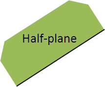
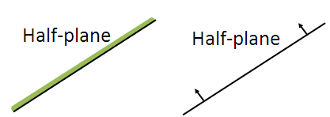
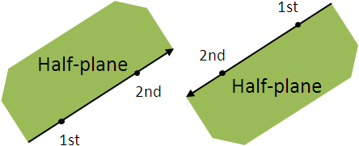
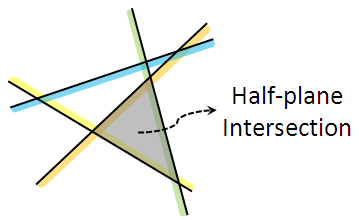
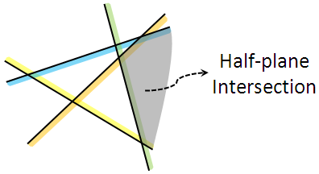
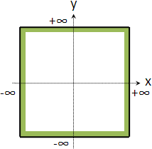

Half-plane Intersection
程度★ 難度★
Half-plane
一條直線把二維平面劃分為兩半，其中一半就是「半平面」。半平面可以包含直線，也可以不包含直線。
半平面的一些圖示方式：
實作時，通常以兩個點來紀錄半平面的直線、以兩個點的順序來紀錄半平面的方向。
Half-plane Intersection
「半平面交」就是許多個半平面的交集區域。半平面交的結果可能是：一個開放區域、一個凸多邊形、一條線、一條線段、一個點、空集合。
 Half-plane Intersection: Incremental Method
程度★ 難度★★
演算法
一、預先使用四個半平面，設定一個極大的正方形邊界，讓半平面交擁有邊界。 二、逐一加入每個半平面，並求出當下的半平面交。
online演算法，隨時維護一個半平面交（凸多邊形）。每次更新需時O(N)，總時間複雜度為O(N^2)，N是半平面數目。
UVa 10084 10117 11265 10974
演算法
時間複雜度得改進至O(NlogN)，過程神似「Convex Hull: Incremental Method」，求切點改為求交點即可。
UVa 11989
Half-plane Intersection: Divide and Conquer
程度★ 難度★★
演算法
時間複雜度為O(NlogN)，N是半平面數目。
divide：把半平面分成兩堆。 conquer：分別遞迴求解。 merge：求兩個凸多邊形的交集。O(N)
兩個凸多邊形的交集，可以用旋轉卡尺求解，也可以用掃瞄線求解。
UVa 137
Half-plane Intersection: 另一種演算法
程度★ 難度★★★
演算法
時間複雜度為O(NlogN)，主要取決於排序的時間。N是半平面數目。
可以輕鬆求出組成半平面交的直線是哪些。
一、所有半平面按照極座標角度（斜率）排序。O(NlogN) 角度相同的半平面只需留下最內側的一個。 二、建立一個deque，加入前面兩個半平面。 三、從第三個半平面開始，依序將半平面加入deque： 甲、deque右端持續彈出，直到deque右端的兩個半平面的交點，位於此半平面內。 乙、deque左端持續彈出，直到deque左端的兩個半平面的交點，位於此半平面內。 丙、deque右端加入此半平面。 四、刪除deque兩端多餘的半平面： 甲、deque右端持續彈出，直到deque右端的兩個半平面的交點，位於deque左端的半平面內。 乙、deque左端持續彈出，直到deque左端的兩個半平面的交點，位於deque右端的半平面內。 丙、重覆甲乙，直到無法彈出。
Envelope
程度★★ 難度★
Envelope
使用斜率與截距進行點與線的轉換，可以發現：以半平面交求Envelope，等價於對偶之後求凸包。
也就是說，求半平面交的困難度等同於求凸包的困難度。
【待補文字】
UVa 11756